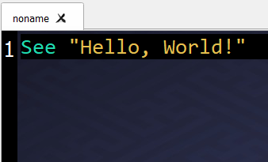
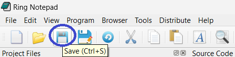
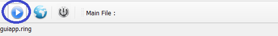
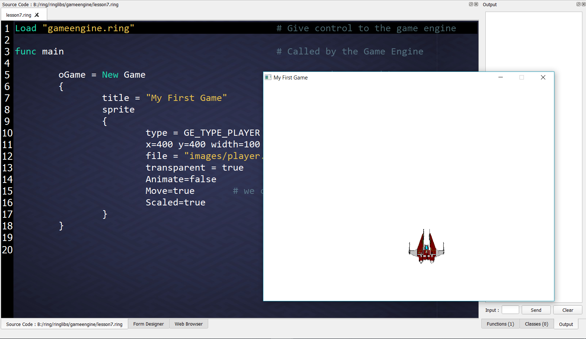
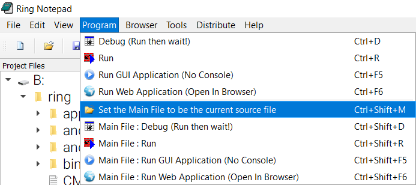
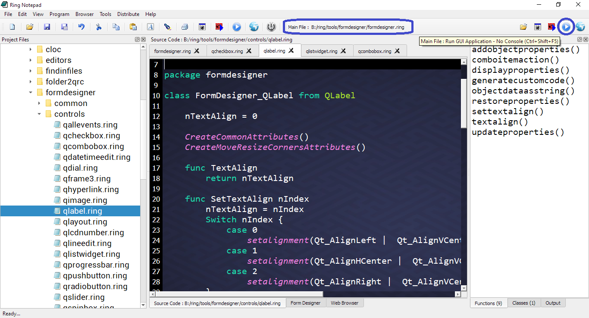

Using Ring Notepad¶
In this chapter we will learn about using Ring Notepad to write and execute Ring programs quickly
Ring Notepad is just a simple application developed using the Ring language.
Ring Notepad - Main Window¶
When we run the Ring Notepad we get the next dockable windows
Project Files Window : where we can select and open any ring file (*.ring) quickly.
Source Code Window : Where we write the source code.
Form Designer Window : The Form Designer to create GUI application forms.
Web Browser Window : Where we read the documentation or quickly open any website.
Output Window : Output when we run programs that print to the standard output
Function Window : List of functions in the current source file
Classes Window : List of classes in the current source file

Creating and running your first Console Application¶
At first we will type the source code
see "Hello, World!"
As in the next image
Then we will click on the “Save” button from the toolbar (or press CTRL+S)
Determine the source code file name and location.
For example type : hello
This will create a new source code file called : hello.ring

To run the program click on “Debug (Run then wait!)” button from the toolbar

The next screen shot present the application during the runtime
Press Enter to continue and return to the Ring Notepad.

Creating and running your first GUI/WebAssembly/Mobile Application¶
To learn how to create GUI applications using Ring check the “Desktop, WebAssembly and Mobile development using RingQt” chapter.
Source Code:
load "guilib.ring"
new qApp {
new qWidget() {
resize(400,400)
setWindowTitle("Hello, World!")
show()
}
exec()
}
In Ring notepad we have a special button to run GUI applications without displaying the console window.
The next screen shot present the application during the runtime

Creating and running your first Web Application¶
To learn how to support Ring in your web server and how to create web applications check the “Web Development (CGI Library)” chapter.
Note
You need to support the Ring language in your web server to be able to run the next example.
Tip
For Windows users, Ring comes with Apache Web server! Using Ring Notepad we can run any web application from any folder directly without doing any configuration.
Source Code:
#!ring -cgi
load "weblib.ring"
import System.Web
new Page {
text("Hello, World!")
}
We can run the application in any web browser or in the browser that are embedded in Ring Notepad.

We can run the web application using the Web icon.

Creating and running your first Desktop/Mobile Game¶
To learn about creating 2D Games using Ring check the “Demo Project - Game Engine for 2D Games” chapter.
Source Code:
load "gameengine.ring"
func main
oGame = New Game
{
title = "My First Game"
sprite
{
type = GE_TYPE_PLAYER
x=400 y=400 width=100 height=100
file = "images/player.png"
transparent = true
Animate=false
Move=true
Scaled=true
}
}
We can run the application as any GUI application.
The Main File in the Project¶
The idea of the Main File ToolBar is to determine the main file in the project When the project contains many source code files
Using this feature we can run the project (Main File) at any time while opening other files in the project without the need to switch to the Main File to run the project.
To quickly use this feature
(Open the project main file)
Press Ctrl+Shift+M to set the current source code file as the main file
Open and modify other source code files in the project
To run the project (Main File) at any time press Ctrl+Shift+F5 (GUI) or Ctrl+Shift+D (Console)
Screen Shots:
 The Edit Menu¶
From the Edit menu we can Cut, Copy and Paste text.
Also we can change the font and the colors.
We can Go to a specific line or use the Find and Replace window to find and replace text.
Also We can set the Tab Width (Number of Spaces)
Starting from Ring 1.8 we have the (Find in Files) option.
Starting from Ring 1.11 we have the (Insert Text, Lower Case, Upper Case & Capitalize) options.